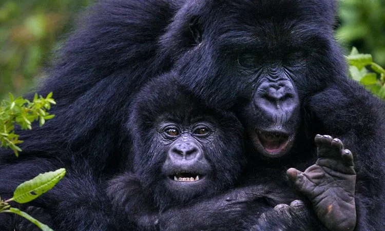
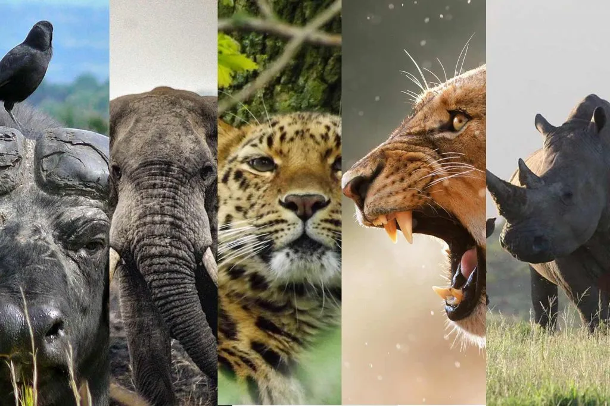
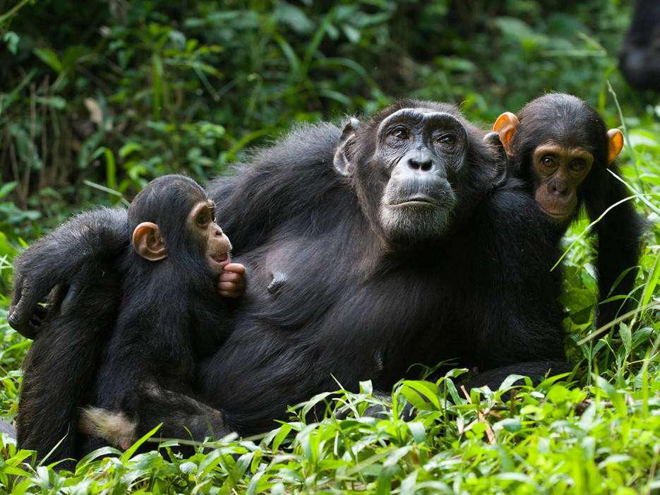
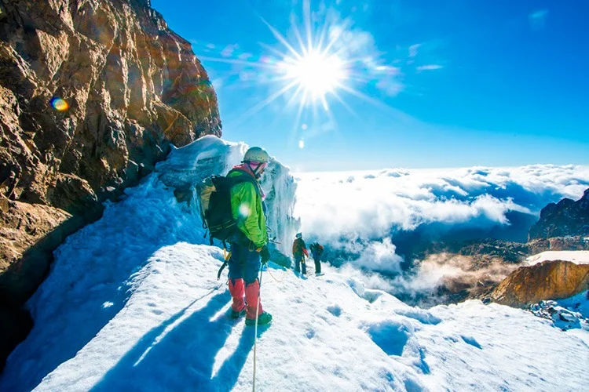
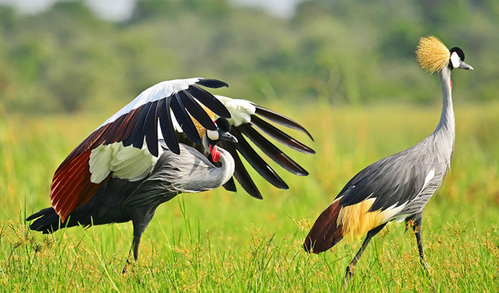
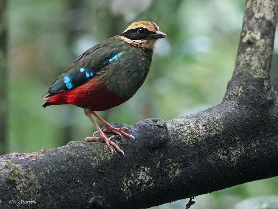
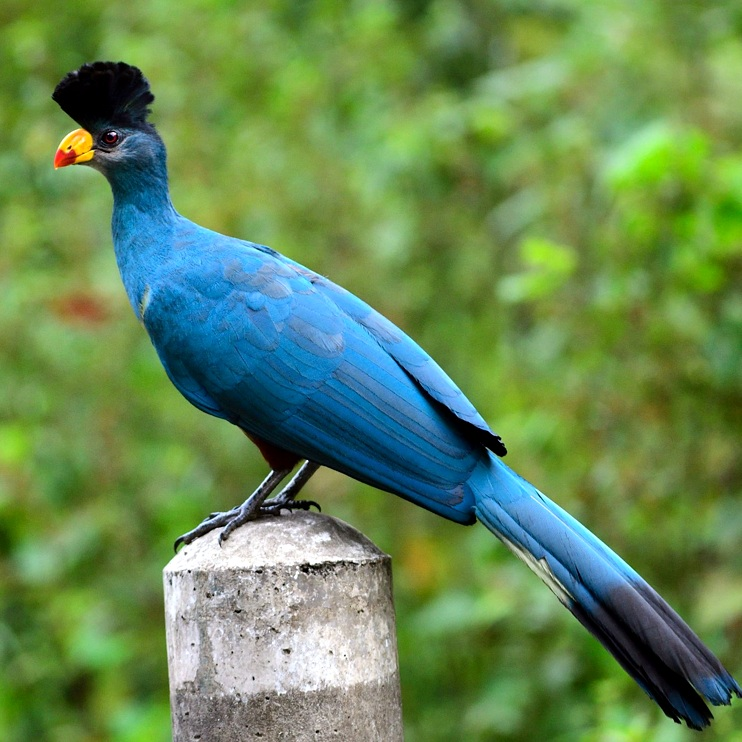

Uganda, often called the "Pearl of Africa," is a premier destination for travelers seeking diverse wildlife, including half of the world's remaining mountain gorillas, and dramatic landscapes from the Source of the Nile to the Mountains of the Moon.
As you journey through the country, the savannas of Queen Elizabeth National Park beckon with their rich tapestry of wildlife. Lion, elephant, and a myriad of birds create a symphony of life that is simply captivating. Kibale National Park is a fascinating wildlife-rich home to a unique 12 primate species - the world's highest density of primates. Most visitors visit Kibale to see chimpanzees, and you will likely also encounter East Africa's largest endangered red colobus monkey population.
The roar of Murchison Falls, where the Nile River asserts its might, is a spectacle of raw power and beauty. The park is home to diverse wildlife inhabiting the savannahs, tropical forests, wetlands and open waterways, a haven for elephant, buffalo, hippo, antelope, lion, and leopard. Murchison Falls is also home to about 450 bird species, making it a birder's paradise. For thrill-seekers, the rapids of the Nile at Jinja offer an unmatched white-knuckle rafting experience. Cultural immersion is profound in the rhythmic dances and heartfelt songs of the local tribes. From the Batwa's ancient melodies to the energetic steps of the Karamojong, Uganda's soul is expressed through its people.



Gorilla Trekking in Uganda is an unforgettable experience, offering the chance to observe these magnificent creatures in their natural habitat. Uganda is home to roughly half of the world's remaining mountain gorilla population, making it a critical conservation hub.
A permit is mandatory and must be secured well in advance, as only 8 visitors are allowed per habituated gorilla family each day. For 2026, the official permit rates issued by the Uganda Wildlife Authority (UWA) are:
For a more immersive experience, the Gorilla Habituation Experience in Bwindi's Rushaga sector allows 4 hours with a semi-habituated group for $1,500 USD (Foreign Non-Residents).

Uganda's diverse ecosystems support a rich variety of wildlife, making it a prime destination for safari enthusiasts. The country is home to the Big Five: lion, leopard, elephant, buffalo, and rhinoceros. Safari experiences in Uganda range from game drives in national parks to guided walks through forested areas.The country's 10 national parks offer diverse landscapes, from the powerful Murchison Falls to the remote plains of Kidepo Valley.
A wildlife safari in Uganda typically costs between $200 and $1,500+ per person, per day, depending on your comfort level.
options| Category | Cost (USD) |
|---|---|
| Basic Safari | $200 - $500 |
| Luxury Safari | $1,000+ |
Pro Tip: You can save significantly by traveling in a group of 4-6 people to share vehicle and fuel costs, or by booking during the low seasons (March-May and October-November) when some lodges offer discounted rates.

Uganda is home to approximately 5,000 chimpanzees, making it one of the premier global destinations for seeing our closest relatives in the wild. Chimpanzee tracking in Uganda is a unique and thrilling experience, offering visitors the chance to observe these intelligent primates in their natural habitat. The best locations for chimpanzee tracking are in Kibale National Park and Mgahinga Gorilla National Park, where the chimpanzees are habituated to human presence.
Age Limit: The minimum age for chimpanzee trekking is 15 years (some sites allow 12 with special permission).
Rules: You must maintain an 8-meter distance, avoid flash photography, and cannot trek if you have a communicable disease like a cold or flu.
Best Time: The dry seasons—June to September and December to February—offer easier trekking conditions, though tracking is possible year-round.
Chimpanzee tracking permits in Uganda typically cost between $150 and $200 per person. These permits are valid for one day and must be purchased in advance from the Uganda Wildlife Authority (UWA).

Uganda, famously known as the Pearl of Africa, is a premier destination for adrenaline seekers and adventure enthusiasts. From world-class white-water rafting on the Nile River to challenging mountain climbs and intimate primate encounters, the country offers a diverse range of heart-pounding activities, there's something for every adventure lover.
Conquer Grade 3 to 5 rapids on the mighty Nile River. Jinja is the "Adventure Capital of East Africa," offering both full-day and half-day expeditions.Experience the thrill of navigating the rapids of the Nile River in Jinja, Uganda's premier white-water rafting destination.
Take a 44-meter (144-foot) leap from a platform over the Nile. Thrill-seekers can even opt for a "water touch" mid-bounce.Experience the ultimate thrill of jumping off a bridge in Jinja, Uganda's premier bungee jumping destination. The jump is over the Nile River and offers stunning views of the surrounding landscape.
Scale the Rwenzori Mountains ("Mountains of the Moon") to reach Margherita Peak (5,109m), Africa's third-highest peak, featuring glaciers and technical climbs. Alternatively, hike Mount Elgon to reach Wagagai Peak (4,321m).Challenge yourself on the peaks of the Rwenzori Mountains, home to some of Africa's highest peaks. The trekking routes offer breathtaking views and a true sense of adventure.
Descend a 100-meter sheer cliff right next to a thundering waterfall at the foothills of Mount Elgon.Experience the thrill of abseiling down the impressive Sipi Falls, one of Uganda's most spectacular waterfalls. The activity offers a unique perspective of the surrounding landscape and is suitable for experienced adventurers.
Navigate muddy trails, forest tracks, and village paths along the Nile or through the rugged terrain of Lake Mburo National Park.Explore rugged terrains and scenic trails on a quad bike, available in various locations across Uganda. Quad biking offers an exhilarating way to experience Uganda's diverse landscapes, from savannahs to mountainous regions.
Soar through the canopy of Mabira Forest on one of Uganda's most biodiverse skyways or fly across the Nile at various adventure parks.
Drift over the vast savannahs of Murchison Falls National Park or Queen Elizabeth National Park at sunrise.Soar over Uganda's diverse landscapes, including the scenic Nile Valley, the rolling hills of the central region, and the lush Mabira Forest. Hot air ballooning offers a unique perspective of Uganda's natural beauty from above.

Uganda is often called a "birder's Eden," home to over 1,073 species—which accounts for roughly 50% of Africa's bird diversity and 11% of the world's total. Its unique position at the intersection of the East African savannah and West African rainforest creates a massive range of habitats.Uganda is a paradise for birdwatchers. The country's diverse habitats, from montane forests to wetlands, support a rich variety of birdlife. Popular birding spots include Mabira Forest, Lake Victoria, and the Albertine Rift region.

A prehistoric-looking, "mega" bird and the most sought-after species in Uganda.

An elusive forest jewel, famously difficult to spot but most reliable in Kibale.

The African Green Broadbill is one of Africa's rarest and most sought-after avian treasures.

One of Uganda's most colorful forest birds, common in several forest patches.
Uganda's only truly endemic bird, found exclusively in the eastern wetlands of Teso.
Uganda beckons with its tapestry of landscapes, from the roaring Murchison Falls to the tranquil shores of Lake Victoria. Encounter majestic gorillas in misty Bwindi and witness the tree-climbing lions of Queen Elizabeth Park. Asilia crafts unforgettable safaris, guiding you through Uganda's mosaic of wonders. Embark on a journey of discovery and contact us today to help you design your dream Uganda adventures.


Join our newsletter. Stay in touch, be travel ready.


© UG TOURS 2026. ALL RIGHTS RESERVED